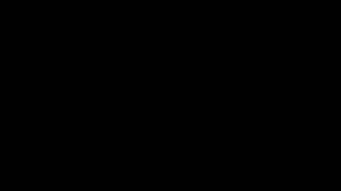

A 2D platform fighter with Australian animals. Built in Godot 4 on a deterministic 60 Hz simulation tick, rollback‑ready from line one.

| A D | Move |
| Space | Jump (double) |
| J | Bite |
| I | Kick |
| U | Roll attack |
| K | Block |
| R | Reset |
Fixed-point physics via SG Physics 2D. No delta in gameplay, no signals, no deferred calls. All randomness seeded.
The wombat's hardened rump absorbs hits, but the meter drains while held and breaks with a lockout if you turtle.